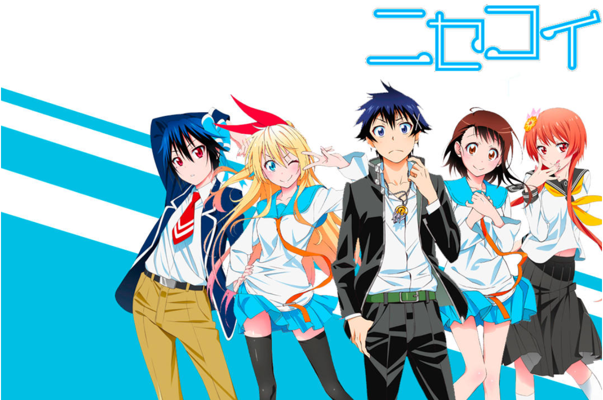

일본의 러브 코미디 만화. 작가는 코미 나오시이다.
야쿠자의 후계자인 이치죠 라쿠가 경쟁 조직인 갱과의 전쟁을 막기 위해 적대 조직의 후계자인 키리사키 치토게와 가짜로 사귀게 되며 이야기가 시작된다.
소년 점프에서 2011년 48호부터 연재됐으며 단행본은 점프 코믹스 레이블로 발매됐다.
2016년 36·37 합병호까지 연재됐는데 주간 소년 점프에서 가장 오래 연재된 러브 코미디 만화가 되었다. 전 25권 완결.
위에서 말했듯 라쿠와 치토게의 가짜 연인 행세와 그로 인해 벌어지는 소동 그리고 열쇠에 얽힌 라쿠와 등장인물들의 과거가 주된 내용이다.
내용 전개가 대부분 어디선가 본 듯한 평범한 스토리 같다는 지적도 있지만 하렘물과 러브 코미디에 사용되는 클리셰란 클리셰는 모조리 갖다 붙일 정도로 공식에는 대단히 충실한 편.
중반부까지 앙케이트 순위에서 높은 순위를 기록했고 판매량도 괜찮은 편이었다.
점프에서 살아남기 힘든 러브 코미디라는 장르를 고려할 때 상당히 높은 점수였다.
여기에 애니메이션을 필두로 한 각종 미디어 믹스도 인기를 끌었다.
누계 발행 부수는 2013년 6월 200만 부를 돌파하였으며, 2015년 9월 900만 부를 돌파하였다.
연간 판매부수는 2012년 미상, 2013년 1,542,417부, 2014년 3,826,372부, 2015년 3,199,972부로 집계되었다.
2016년 6월 누계 부수 1000만 부를 돌파했다. 2010년대 러브 코미디 최초 1000만 돌파. 그리고 2018년에 1200만 부를 돌파했다.
이는 주간 소년 점프 연재 러브 코미디 중에서는 오렌지 로드에 이어 2위의 기록이다.
 사진,글 출처 나무위키 - 니세코이